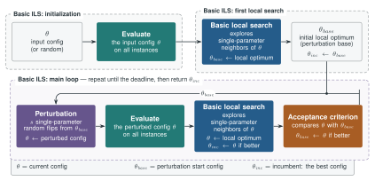

🐏 RamParILS
A parallel Rust rewrite of ParamILS — automated algorithm configuration via Iterated Local Search.
Used as the inner tuner in Grackle, a strategy portfolio invention system for automated reasoning solvers.
Current release: v0.2.0 (2026-08-19) · changelog · sources and issues on GitHub · installation
pip install ramparils # Python extension
cargo install --git https://github.com/deeper4ai/ramparils --tag v0.2.0 # CLI
📦 What’s new in 0.2.0
- One command-line tool, two sub-commands.
ramparils run scenario.yamltunes;ramparils db cache.dbcacheexports what a result cache holds. This replaces--scenariofileand the separateramparils-dbbinary, so 0.2.0 is not CLI-compatible with 0.1.x — scenario files, parameter files, caches and the Python API are unchanged, only the invocation moves. See CLI. - A search that can climb out of a local optimum. The acceptance criterion alone could only ever move downhill, so a strong local optimum ended the useful part of a run. Soft acceptance within a tolerance, stagnation-triggered restarts, a choice of restart target, and ParamILS’s random probes now address it — all off by default. See Algorithm.
- Provenance.
ramparils --versionand the header of every debug log carry the git revision the binary was built from, with a-dirtymarker when the worktree was not clean. A version number alone never said which code ran. ramparils db confsrecovers the configuration behind each strategy hash in a cache, so a.dbcacheis no longer a pile of opaque hashes.
Full detail, including the earlier releases, is in the changelog.
💡 What it does
Given a target algorithm with configurable parameters, RamParILS searches for the parameter setting that minimises runtime or a numeric solution cost on a set of training instances. It uses FocusedILS by default. RamParILS starts by scoring configurations on a configurable prefix of the training instances and increases that shared fidelity when the incumbent survives a challenge. Neighbours are submitted to a bounded worker pool, and the first fully evaluated improvement is accepted. Results can be stored in a persistent SQLite cache for reuse by compatible tuning runs.
Cache entries are keyed only by the active configuration and instance path. Use a separate cache when the algorithm command, cutoff, objective, solver version, wrapper behavior, or random seed changes. Reusing a cache across incompatible scenarios can silently return stale results.
🚀 Key differences from Ruby ParamILS
| Ruby ParamILS | RamParILS | |
|---|---|---|
| Evaluation | Sequential | Parallel over all (neighbour, instance) pairs |
| Cache | In-memory, per-run | Persistent SQLite, shared across runs, self-describing |
| Cache inspection | — | ramparils db solved | status | confs |
| Python API | subprocess call | Native extension via PyO3 |
| Search modes | BasicILS, FocusedILS | BasicILS, FocusedILS, random (ParamILS’s pert_rand) |
| Escaping a local optimum | Random restart at fixed probability (p_restart), R random probes | Both, plus soft acceptance within a tolerance and stagnation-triggered restarts |
| Restart target | Uniformly random configuration | Random, or a bounded perturbation of the incumbent |
| Comparing across fidelities | Score vector per configuration, compared at a common level | Single score, re-measured for the incumbent and the home base at every fidelity increase |
| Multi-phase schedules | — | Iterative deepening: geometric growth of instances, cutoff and deadline |
| Provenance | — | Source revision in --version and every log header; full scenario echoed at startup |
| Non-deterministic algorithms (multiple seeds) | Supported | Not (yet) supported |
Parallel evaluation is the primary motivation for the rewrite. Actual speedup depends on worker count, neighbourhood width, current fidelity, solver runtimes, early acceptance, and cache hits. The persistent cache compounds this advantage across compatible Grackle tuning runs on overlapping problem sets.

The search in its basic form: θ is the current candidate, θ_base the point each perturbation
starts from, and θ_inc the incumbent that the run returns. See Algorithm
for what each box does and for the FocusedILS fidelity schedule.
🔗 Quick links
- Installation
- CLI usage
- Python API
- Algorithm
- Parameter file format
- Solver wrapper protocol
- Changelog
- GitHub repository
🤝 Acknowledgements
This project is part of DEEPER and supported by the DEEPER grant from Renaissance Philanthropy.